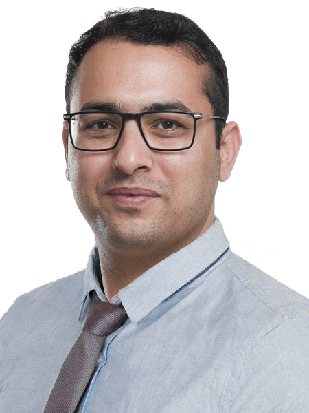

Lebenslauf
Ahmad Qais Malikzadah

Kontaktdetails
Ahmad Qais Malikzadah
Kanstraße 26, 22089 Hamburg
Mail: qaisjoya2003@gmail.com
Mobil: 017620081905
Persönliches Profile
Geboren am 5.june 1989 und aufgewachsen in Kabul, Afghanistan.
Bachelor in Agrarökonomie in Kabul, Afghanistan.
Erste Festanstellung als Sachbearbeiter in der Finanzverwaltung der Stadtverwaltung Kabul, Afghanistan.
Master of science in Internationaler Landwirtschaftsentwicklung: Stipendium der japanischen Regierung für die Tokio University
of Agriculture, Tokio Japan. Anschließend Festanstellung als stellvertretender Abteilungsleiter in der Stadtverwaltung
Kabul, Afghanistan. Umzug nach Hamburg aus familiären und karriererelevanten Gründen.
Kenntnisse & Fähigkeiten
- Ms Office
- Scrum Master
- Linux Essential 010
- Grundlage CNNA
- Grundlage Java
Sprachen
- Deutsch C1
- English C1
- Perisch (muttersprache)
Berufserfahrung
03.2017 - 11.2018
Stellvertrender Abteilungsleiter Abtielung Grünfläschen Stadtverwalung Kabul,
Kabul, Afghanistan
10.2013 - 10.2014
Sachbearbeiter
Finanzverwaltung Stadtverwaltung Kabul,
Kabul Afghanistan
Akademische Ausbildung familliäre Auszeit
Umschulung Fachinformatiker
BBQ (Baumann Bildung und Qualifizierung)
10.2022 - 06.2025
familliäre Auszeit
Betreung meiner zwei Kinder
Deutsch Sprachschule
Level A1, B1, B2, C1
06.2019 - 10.2022
M.Sc Internationale Landwirthschaftsentwicklung
(Stipendeum der japanischen Regierung)
Tokyo University of Agriculture, Tokyo, Japan
03.2015 - 03.2017
B.S. Agrarökonomie
Kabul University, Kabul, Afghanistan
03.2008 - 12.2012